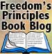
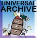
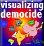

This is a book for those who want to foster freedom at home and abroad. If you believe in individual freedom as a right of all people, and if you believe that free people in free nations have an obligation to help those who suffer repression and enslavement under the world's thug regimes, then Freedom's Principles is for you. The pages that follow offer nothing less than a fundamental understanding of the psychological, socio-economic, and political roots of a worldview that I call freedomism.
So what is this freedomism? Why do I use this new term, instead of adopting a conventional political party label? I might explain by considering the political labels of my own country, the United States. Looking at American politics alone, it can be readily understood that the general positions of the Democrats, Republicans, Reform Party, Libertarian Party, Green Party, Socialist Party, and Communist Party, not to mention the plethora of even smaller groups, do not emphasize freedom at home and abroad as a core theme, although some of their political leaders may come close to doing so at times. Republicans, for example, if I may take President Bush as most representative, are freedomists in their foreign policy, to a much lesser extent in their economic policies, and not at all in their traditional social conservatism.
Then there are the Democrats who are keen to spread democratic freedom abroad, if we are to believe the public statements of such leading figures as Bill and Hillary Clinton. In practice, this means an emphasis on working through the United Nations, and the maintenance of stability in international relations. National defense is also important for Democrats, but, as an issue, it ranks second to international aid, to sensitivity to the "international community", and to "building bridges." Moreover, Democrats are soft socialists at home, believing in high taxes, government economic regulation and controls, in pursuit of a "social welfare" agenda. That said, American Democrats do also emphasize freedom, and not only rhetorically, but also in their policies, for the American citizen, at least.
What, then, of the libertarians? For sure, the beliefs of libertarians move us closer to what I mean by freedomism. As a young man, I was a self-professed democratic socialist, but in the early 1970s, under the hammer blows of Ludwig von Mises, F.A. Hayek, and Milton Friedman, I gave up my belief in socialism in favor of democratic libertarianism. And libertarian is what I called myself until recently. Indeed, I remain libertarian in domestic policy. I contend that the more domestic freedom there is from regulation, government control, taxation, and oppressive laws, the better. But only up to a point. I am not an anarchist. I believe that social justice means minimal government consistent with the guaranteed protection of equal civil and political rights for all. Yet this is a view that is commonly held by libertarian thinkers. Why, then, do I no longer describe my own view as libertarian? The reason lies beyond domestic politics.
On foreign policy, the libertarian is typically an isolationist, fundamentally opposed to foreign involvements and interventions, a perspective that has led some libertarians into an odd coalition with the democratic socialist and the communist (Marxist) left. Put simply, the libertarian argument is, "As domestic politics should be free, let international relations also be free. Let there be free trade and commerce, and freedom for other countries to do whatever they want with their people. What goes on in such countries is not our business."
In my view, the libertarian making such an argument is simply blinded by his faith in freedom, seemingly unaware that everything demands contextual qualification. Should those with a dangerous infectious disease remain free, when they could spread it everywhere, killing maybe hundreds with it? Unfortunately, by their isolationism, libertarians make life easier for the gangs of thugs (blandly called dictatorships) that murder, torture, and oppress their people as a routine matter of policy.
Not our business, our libertarian says, even though his fundamental belief in freedom is being violated in the most horrible ways, and even though he knows this to be the case. In his isolationism, the libertarian implies that since it's somebody else that's suffering, not him, or his loved ones, or his friends, it's okay. This is a position I have found myself unable to hold, and not because I care any less about my own personal security. Indeed, it is my contention that the isolationist ultimately plays fast and loose with his own welfare and that of his loved ones. For in an age of nuclear weapons and readily transportable biological, free nations can no longer sit back and ignore what goes on elsewhere in the production and deliverability of such weapons. Opposition to the rapacious affairs of thug regimes, including military intervention, is, in my view, absolutely necessary to secure and defend existing democracies, leaving aside the issue of advancing democracy further throughout our world.
In short, I believe that thug regimes cannot be trusted with either the possession or the capability for production of weapons of mass destruction. Yet the isolationists, whatever their party, seem willing to let the thugs rule not only their enslaved peoples, but, in due course, the world, too. As a freedomist, I say this is wrong. I believe that it is the responsibility of those within free nations to promote the freedom of all the world's peoples, and if tyrant leaders anywhere become a threat to the free world, as did those who ruled Iraq and Afghanistan until recently, and as those of Iran are threatening to do now, then that free world must take action, including military action if all else fails, for the sake of all the world.
This, then, is my position. I am a freedomist, and I believe many others are as well. I intend this book to give substance to this belief, to provide not only the intellectual understanding of why the political world is as it is today, but also a path to a future world that is free, bountiful, and at peace. This is an ambitious undertaking, to be sure. Only you, the reader, can judge whether I succeed.
You are the
visitor to the bog archive since JUNE 25, 2006.